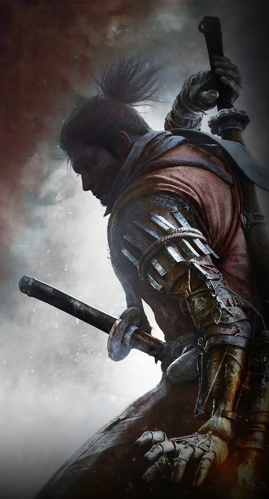
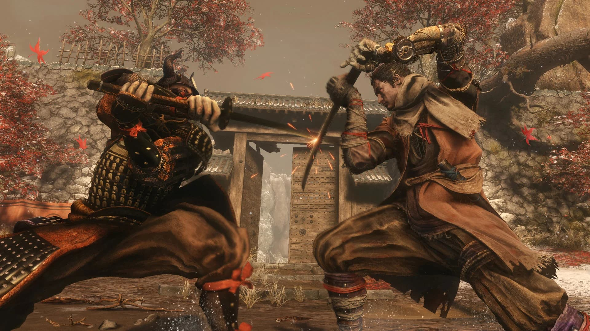
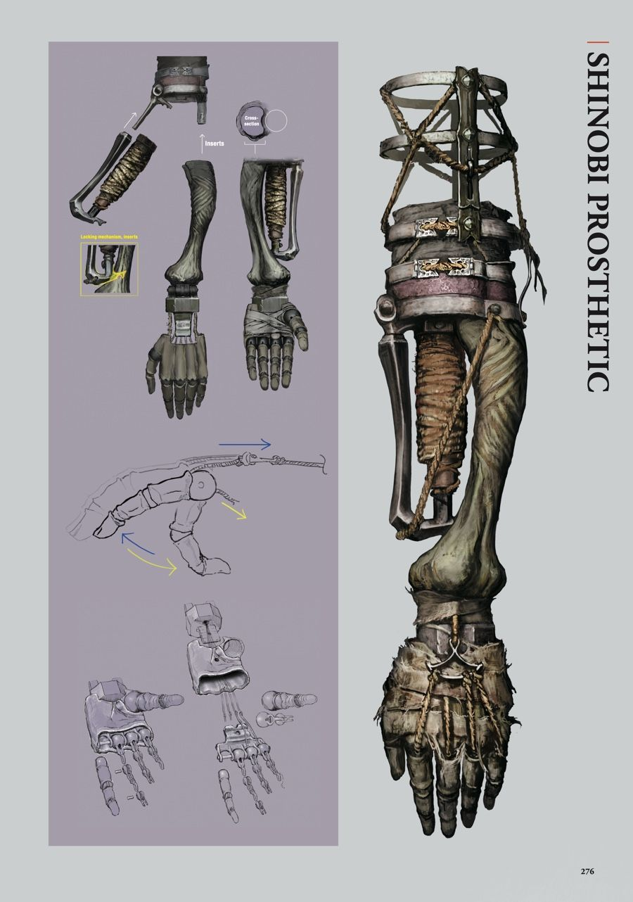
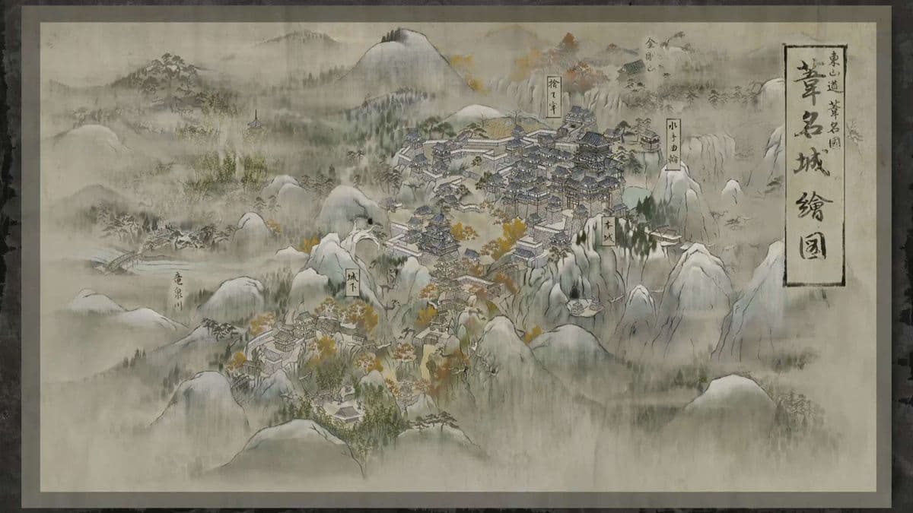

Introduction
What is Sekiro?
Sekiro: Shadows Die Twice is a third-person action-adventure game developed by FromSoftware. The player controls Wolf, a shinobi trying to rescue his young lord in a fictional version of Sengoku-era Japan. Unlike many action games, Sekiro focuses heavily on deflecting attacks, breaking posture, and learning enemy rhythms.

Combat
Combat is a Rhythm
Sekiro's combat is built around timing, pressure, and precision. Instead of constantly dodging away from enemies, the player is encouraged to stay close, deflect attacks, and break an opponent's posture. Every fight feels like a rhythm. Learning when to attack, when to deflect, and when to counter turns difficult encounters into a pattern the player can gradually understand.
Core combat skills
- Deflect
- Mikiri Counter
- Jump Counter
- Prosthetic Tools
Deflect
Stay close, read the enemy's timing, and turn defense into offense.

Posture
Break an enemy's posture to create an opening for a Deathblow.

Prosthetic Tools
Use tools like the Shuriken, Firecracker, and Flame Vent to adapt to different enemies.


Explore Ashina
Ashina Castle
The heart of the game's conflict, filled with rooftops, samurai, and vertical paths.
Hirata Estate
A burning memory of Wolf's past, filled with enemies, secrets, and tragedy.
Fountainhead Palace
One of the most visually striking areas in the game, combining beauty, mystery, and danger.
Bosses
Some of Sekiro's most memorable fights test different skills.

Genichiro Ashina
Tests the core fundamentals of deflecting, pressure, and timing.

Guardian Ape
Forces the player to adapt to unpredictable movement and changing attack patterns.

Isshin, the Sword Saint
A final test of nearly everything the player has learned.
| Boss | What It Tests | My Difficulty |
|---|---|---|
| Genichiro Ashina | Deflect timing | ★★★ |
| Guardian Ape | Adaptation | ★★★★ |
| Isshin, the Sword Saint | Everything | ★★★★★ |